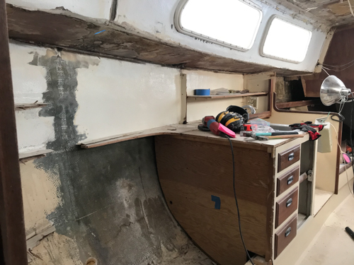
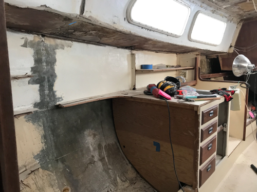

I'm re-coring the deck from below because the outer skin of fiberglass is much thicker than the inner. First I removed all of the inner skin and plywood core...

read moreI'm re-coring the deck from below because the outer skin of fiberglass is much thicker than the inner. First I removed all of the inner skin and plywood core...

read moreI just got back from an island hopping adventure in the BVIs. Sailing, snorkeling, scuba...
read moreI finished installing the new starboard bulkhead. At about this time, I started poking around the port bulkhead...
read moreOnce I decided to replace the bulkhead, I had a few decisions to make...
read moreAfter I removed the main bulkhead, I really started to investigate the core situation of the starboard catwalk. The catwalk was "wet" when I had my survey done in 2016...
read moreRemoving the starboard main bulkhead on a 1976 Cal 2-34 due to rot surrounding the chainplate...
read moreI put it off for a while as I tried to come up with a DIY method for unstepping the mast on Conifer...
read moreAfter two years of sailing around the Chesapeake, exploring various creeks and inlets and rebuilding various systems aboard Conifer, it was time for the big project...
read more